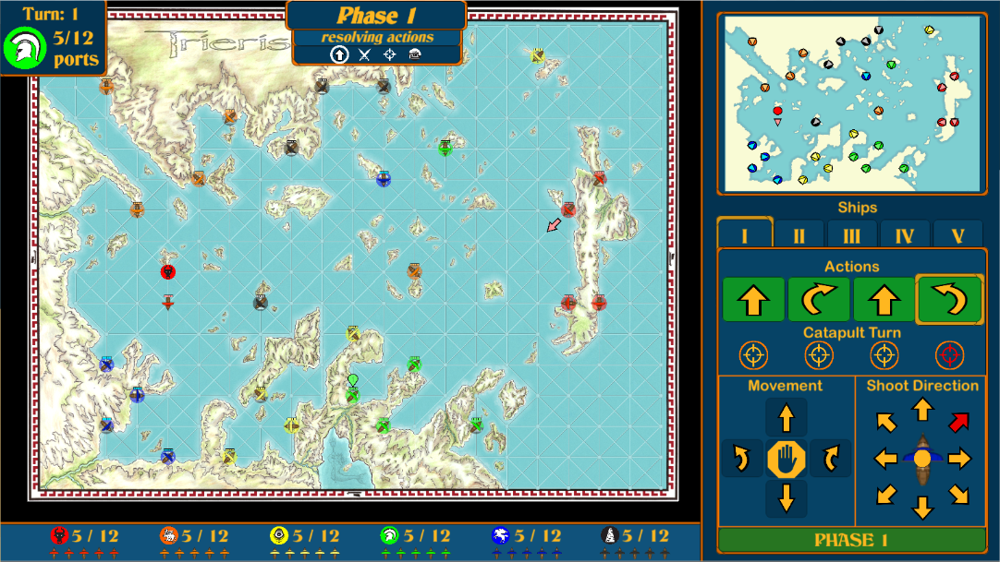
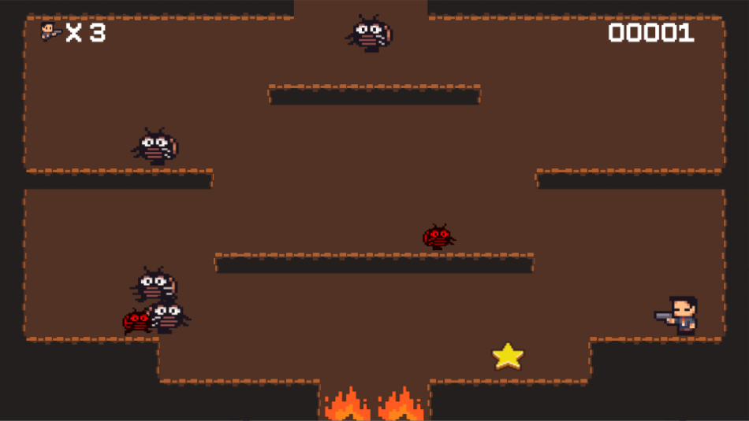
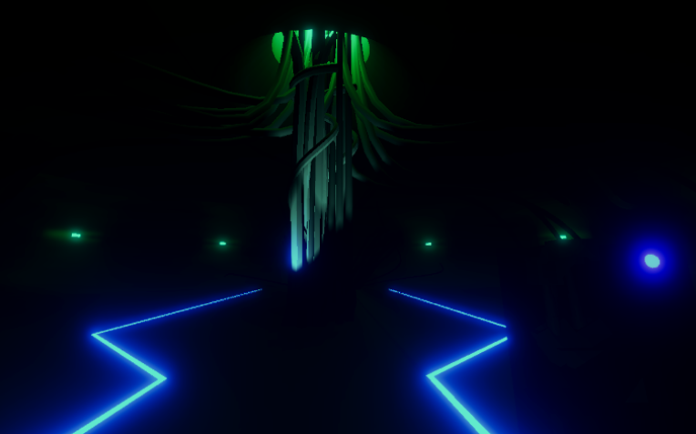
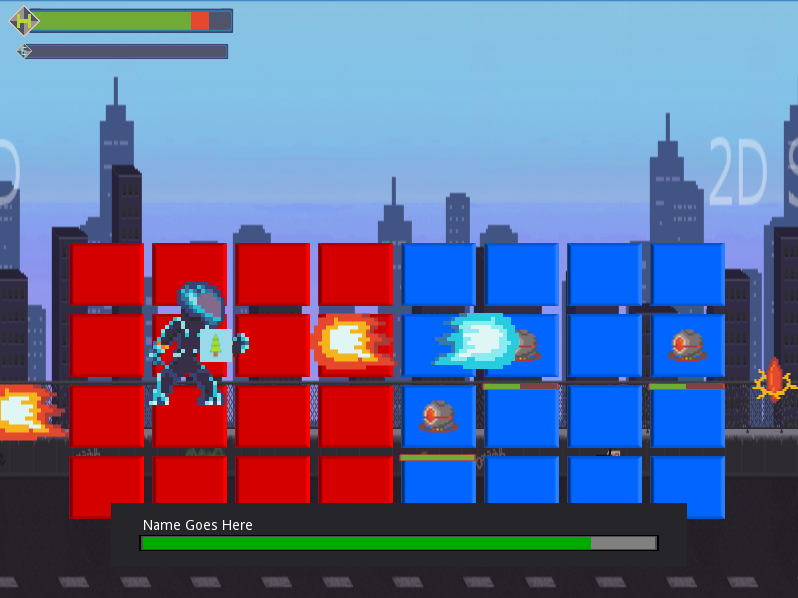

BCIT project - "SOL Invictus"
- Made in Unity Game Engine using C#
- Part of a team of 3
- Responsible for collision, movement, enemy AI, and other misc items
- Created modular enemy type system using Unity scriptable objects
- Created physics/collision system from scratch
- Integrated code from previous navmesh+movement project

The map designed by the map editor

The nav mesh generated for the map

Render meshes created
- Created custom map editor tool for level design with fast prototyping and iteration in mind
- Created a system that generates 3D meshes and navigation meshes from edge/vert layout tailored by game designer
Trieris multiplayer prototype

- Worked in a team to port a pre-existing video game prototype into the Unity engine and expand on features
- Responsible for:
- Adding animation systems to all dynamic aspects of game
- Refactoring systems to allow for multiple players & online play
- Bug fixing, testing
- Successfully implemented multiplayer using Photon and deployed to Windows desktop and chrome webapp
Edgar the X-Terminator

- Worked in a 12 person team to create a 2D game engine from scratch using openGL and C++
- Responsible for:
- Helping plan the overall software architecture and coordinating graphics, phyiscs, and other sub-teams
- Creating and optimizing the Entity-Component management system
- This system handled the creation and memory allocation of all game entities
- Allowed for querying of game entities based on tags, sprites, and component types
- Created a cache system for entities queries to enhance performance
- Working with the graphics team to identifying performance bottlenecks and fix them
- Implementing a simple particle system
- Bug fixing, testing
Solus, a short first person horror game

- Worked in a 4 person team to create an atmospheric first person horror game in Unity
- Responsible for:
- Creating a event system used for level design
- Created a "detective vision" system using shaders
- Designing, whiteboxing, and creating 3D assets for some of the levels
- Misc engineering duties
Making RTS movement and navigation from scratch
- Made in Unity Game Engine using C#
- Researched and implemented relevant algorithms including:
- Dijkstra pathfinding
- Funnel Algorithmn
- Bowyer-Watson Triangulation
- Triangular navmesh generated from verticies and edges defined by square grid
- Movement and collision systems implemented with Unity Data Oriented Technology Stack
- Optimized code for performance for both navmesh generation and pathfinding time
- Implemented multi-threaded navmesh generation
BCIT project - 3D space combat
- Made in Unity Game Engine using C#
- Researched and implemented Boids-style flocking
- (a method for having large groups of flying objects act as a cohesive swarm)
- Object-Oriented Designed used for different spaceship classes (inheritance,polymorphism,etc)
- Used 3D assets from Unity asset store
BCIT project - Zombie survival strategy
- Made in Unity Game Engine using C#
- Practical implementation of previously researched navmesh + movement concepts
- Used the "command" design pattern for AI behavior
- AI actions are encapsulated as objects in a stack
- Allows AI to continue previous behavior when an action is complete
- Allows information like animation timing and attack target to be attached to behavior
- Game entities organized in data-driven design, continguous arrays of component data
- Experimented with simulating large number of game entities at once
Gadget Master, short Godot Engine summer project

- Worked in a 3 person team to create a game in the Godot engine
- Responsible for:
- Working on UI elements
- Creating a dialogue system and data structure for dialogue files